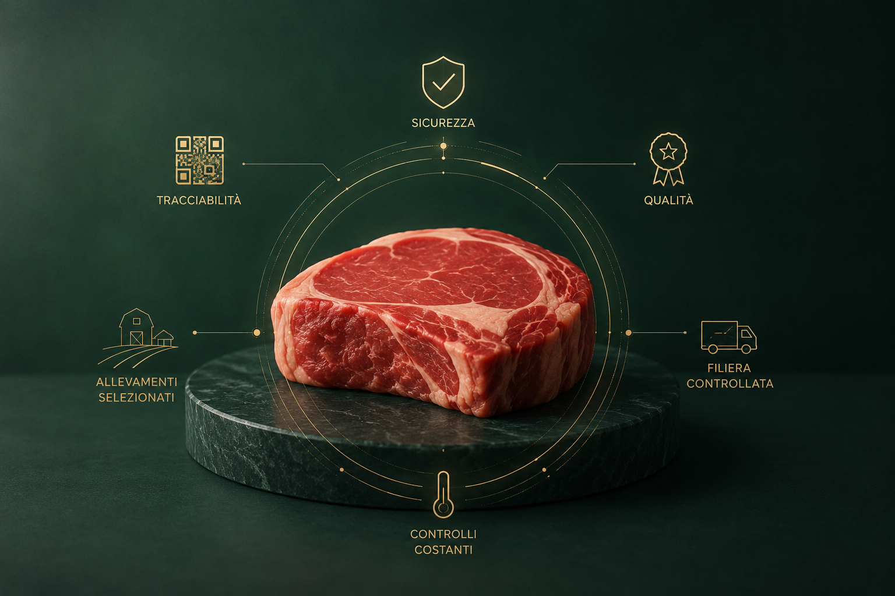
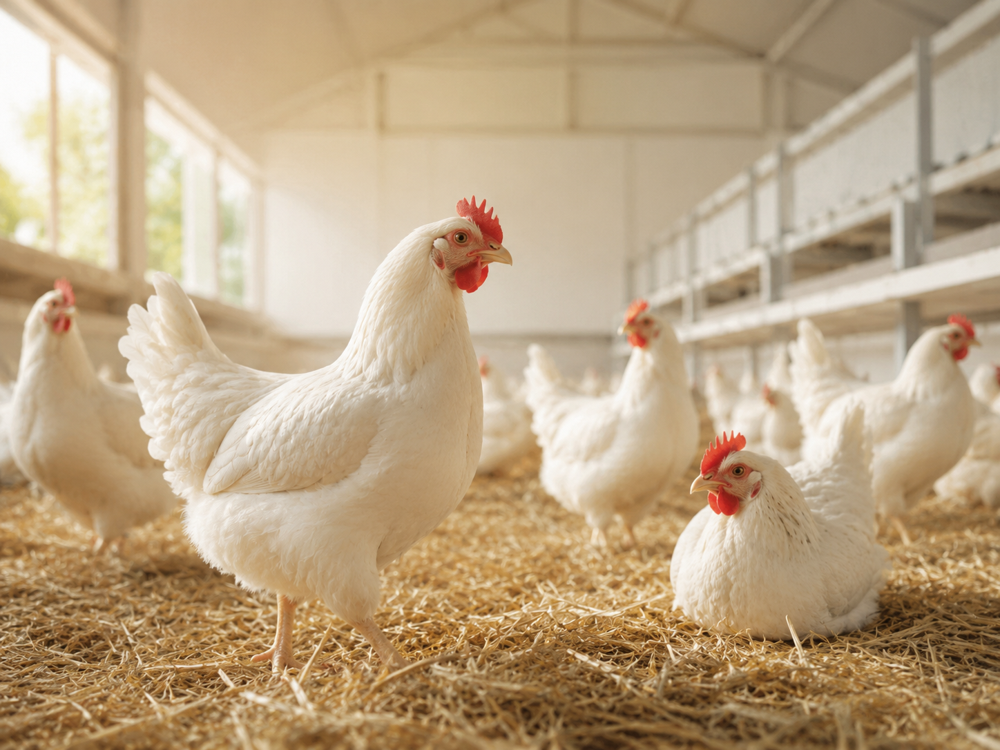
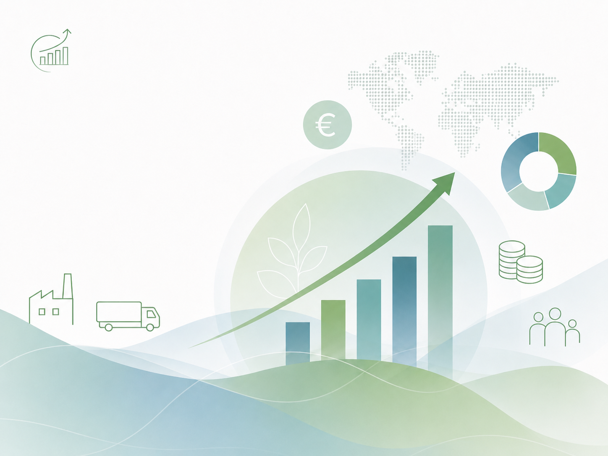
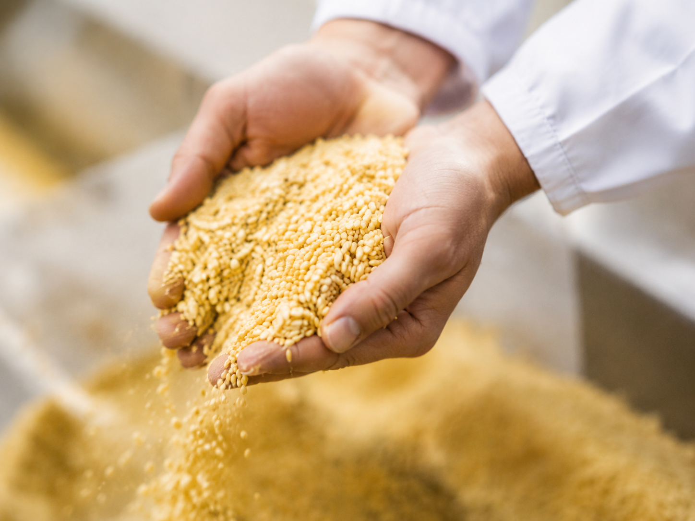
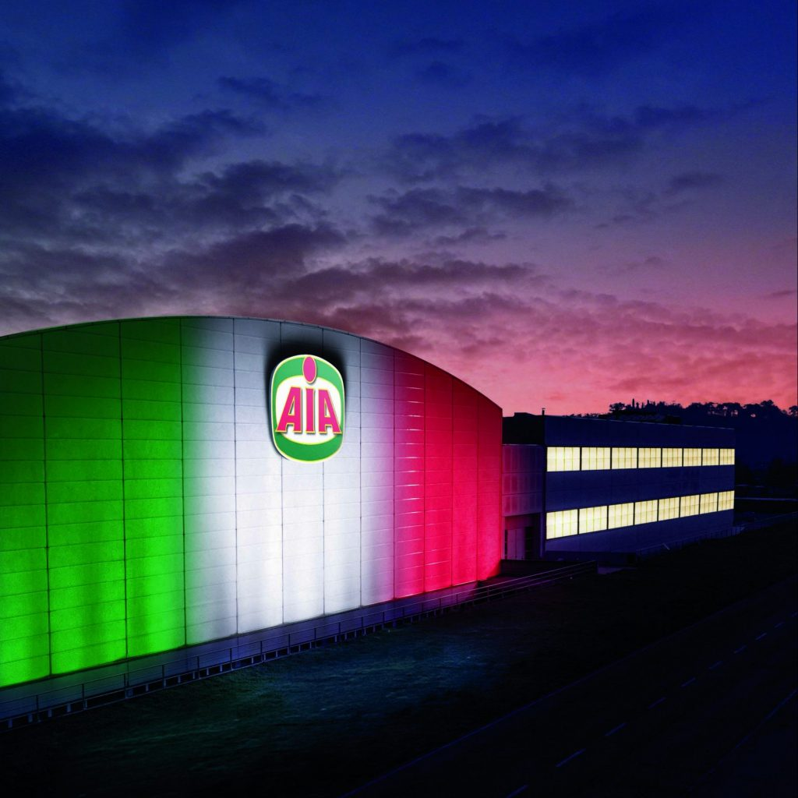
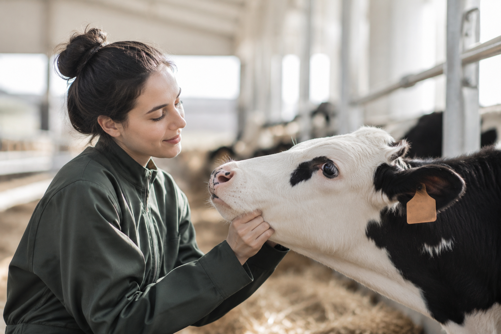
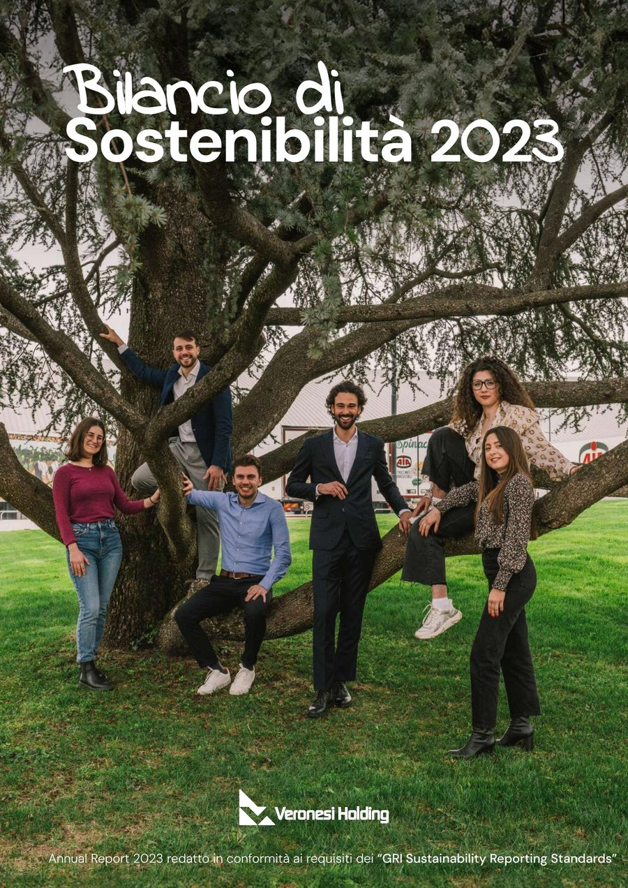
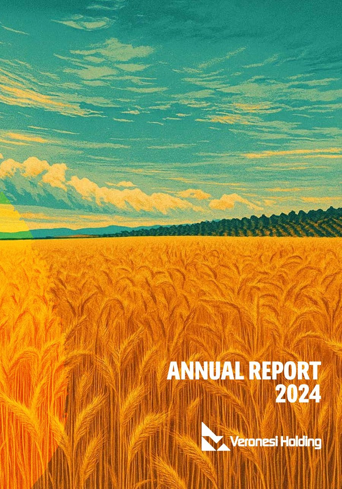

SICUREZZA E QUALITA' DEI PRODOTTI
Sicurezza e qualità dei prodotti
Il Gruppo presidia ogni fase della filiera per garantire sicurezza alimentare, tracciabilità, qualità e conformità dei prodotti.
Report di sostenibilità
Dal 1958 presidiamo ogni fase della filiera, dai mangimi alla distribuzione alimentare. Con AIA, Negroni e Veronesi lavoriamo per coniugare qualità, benessere animale, tutela dell’ambiente e crescita delle persone.
Avvio del percorso strutturato
Dipendenti nel Gruppo
Temi materiali prioritari
I temi considerati prioritari dal Gruppo Veronesi e dai suoi stakeholder secondo l’analisi di materialità.
Seleziona un tema per approfondire

Il Gruppo presidia ogni fase della filiera per garantire sicurezza alimentare, tracciabilità, qualità e conformità dei prodotti.

La salute e il rispetto degli animali sono tutelati attraverso controlli, formazione degli allevatori e miglioramento continuo delle pratiche di allevamento.
Prevenzione, formazione e cultura della sicurezza guidano le attività dedicate alla tutela dei collaboratori e degli ambienti di lavoro.
Il Gruppo promuove comportamenti corretti, trasparenti e responsabili nel rispetto delle norme, dei principi etici e delle procedure aziendali.

La solidità economica sostiene lo sviluppo della filiera, l’innovazione, l’occupazione e la creazione di valore condiviso nei territori.
Dal 2018 a oggi
Un impegno cresciuto nel tempo, dall’ascolto degli stakeholder a risultati concreti e misurabili.
Il percorso oggi
Packaging riciclabile, premiato dalla World Packaging Organization.
Ore di formazione per circa 1.200 allevatori.
Emissioni di CO₂ evitate nel 2024.
Nuovi dipendenti under 30 assunti nel 2024.
Soddisfare il gusto e le aspettative del consumatore è il nostro impegno quotidiano, anticipare e superare i suoi desideri è la nostra sfida.

Dal campo alla tavola, ricerchiamo l’eccellenza in ogni fase della filiera e scegliamo partner che condividano con noi questa passione.

L’attenzione al nuovo e la ricerca continua sono valori radicati nella nostra storia e sono da sempre il nostro modo di fare qualità. Vogliamo continuare a sorprendere il mercato con le migliori produzioni della tradizione alimentare italiana e con prodotti innovativi per nuovi gusti.

La motivazione e la crescita professionale dei collaboratori rappresentano la chiave del nostro successo. Rispetto, fiducia, correttezza e dialogo sono i princìpi ai quali ci ispiriamo per creare entusiasmo e spirito di gruppo.
Ricerchiamo l’efficienza sempre e in ogni fase dei processi organizzativi e produttivi, coniugandola con la costante attenzione alla salute e alla sicurezza dei nostri collaboratori. Ci confrontiamo con il mercato in un’ottica di continuo miglioramento delle nostre prestazioni.
Da sempre consideriamo la sostenibilità uno dei principali fattori di sviluppo, oltre a un impegno inderogabile per le future generazioni. Crediamo che il risultato economico debba andare di pari passo con la tutela dell’ambiente e il benessere delle persone.
La nostra è una storia di successo fondata sul valore dei nostri marchi e sul patrimonio costituito dalla filiera. Vogliamo continuare a perseguire un equo profitto d’impresa nel rispetto dell’etica nei rapporti economici e sociali.

Consideriamo il rispetto degli animali un valore primario. Ogni giorno ci impegniamo con migliaia di allevatori per assicurare la salute degli animali custodendoli in modo responsabile.
Un dialogo aperto e costante con tutti gli attori che partecipano alla vita del Gruppo e contribuiscono alla creazione di valore condiviso.
Dialogo e valore condiviso
Trasparenza e rendicontazione
Consulta gli Annual Report del Gruppo Veronesi: risultati, iniziative e impegni che raccontano l’evoluzione del percorso di sostenibilità.


Metodologia e trasparenza
Standard riconosciuti, perimetri definiti e verifica indipendente per offrire informazioni chiare, confrontabili e affidabili.
La rendicontazione segue i GRI Standards 2021, secondo l’opzione “In accordance”, e applica lo standard settoriale GRI 13.
Periodo: 1 gennaio — 31 dicembreI temi rendicontati sono individuati considerando gli impatti del Gruppo e la loro rilevanza per gli stakeholder.
Analisi aggiornata nel 2022Dati economici, sociali e ambientali seguono perimetri dichiarati; esclusioni, variazioni e stime sono indicate nel Report.
L’Annual Report è sottoposto a un esame limitato da parte di una società di revisione indipendente.
Limited assurance · ISAE 3000 Revised